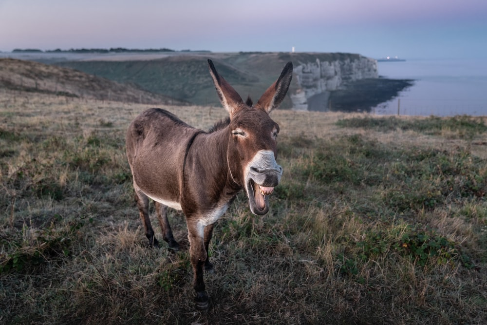

동니야 ㅋㅋ 나 누구게 ㅋㅋ나는야 연돈! 동니의 포켓볼 주인 ㅋㅋ
안녕하세용가링ㅋㅋ저는 도니입니다 말이 도니지 사실상 사슴이죠 꽃사슴ㅋㅋ저는 이슬만 먹고 살고 육식은 입에도 댄적이 없는 맑고 투명한 사슴이랍니다!
제 친구중엔 저와 이름이 같은 도니라는 친구가 있습니다.
사람들이 가끔 헷갈려해요 저도 참으로 난감합니다 하지만 지금은 코로나 시대! 이럴 떄일수록 서로 의지하면서 살아야죠! ㅋㅋ
도니 덕분에 이슬만 먹던 제가 가끔은 사과나 오렌지 같은 과일을 먹을 수 있게 되었어요! 앗 참 밑에 사진이 제 친구 도니입니다!!
